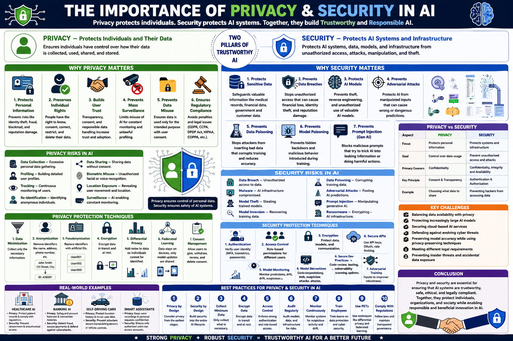

Importance of Privacy and Security AI
AI systems ingest vast amounts of personal data — from medical records to financial transactions to private conversations. Without robust privacy and security safeguards, AI becomes a vector for data breaches, surveillance, and adversarial exploitation. This guide covers the 10 most critical privacy and security factors for AI systems — from differential privacy to adversarial robustness — with practical code examples and CGAI exam-focused questions.

Personal, sensitiveDP / FL / EncryptionTrained & DeployedPrivacy + Security = Trust📊 The privacy and security pipeline for trustworthy AI systems
Mathematically guarantees that an individual's data cannot be inferred from model outputs. The gold standard for privacy-preserving ML.
Train models across decentralized devices without centralizing raw data. Data stays on user devices; only model updates are shared.
AI models are vulnerable to adversarial examples — imperceptible perturbations that cause misclassification. Robustness is a security requirement.
Attackers can reconstruct training data from model outputs (inversion) or steal models through repeated queries (extraction). Both leak private information.
GDPR gives EU citizens the right to explanation, data deletion, and consent. AI systems must comply with data minimization, purpose limitation, and storage rules.
Multiple parties can jointly compute a function over their private inputs without revealing those inputs to each other. Enables collaborative AI on sensitive data.
Perform computations on encrypted data without decrypting it. The AI model operates on ciphertext and produces encrypted results only the data owner can decrypt.
Attackers inject malicious data into training sets to compromise model behavior. Backdoor attacks cause specific misclassifications on trigger inputs.
Attackers determine whether a specific individual's data was used to train the model. This leaks sensitive information (e.g., "was this patient in the cancer study?").
AI models depend on third-party libraries, pre-trained weights, and cloud infrastructure. Supply chain compromises can inject backdoors or exfiltrate data.
Core mathematical frameworks and architectures for building privacy into AI systems.
Understanding the threat model is the first step to building secure AI. These are the most critical attack vectors.
Attacker modifies input at inference time to cause misclassification. Adversarial patches on stop signs, subtle noise on images, malicious prompts.
Malicious data injected into training sets creates backdoors or degrades model performance. Can be targeted (specific trigger) or untargeted (general degradation).
Attacker queries model API thousands of times to train a replica. Steals intellectual property and enables further attacks (white-box adversarial, inversion).
Model outputs leak training data information. GPT models have been shown to memorize and regurgitate training data verbatim, including PII.
Proven defense mechanisms to protect AI systems against privacy and security threats.
The single most effective defense against membership inference and model inversion. Add calibrated noise during training.
Train on adversarial examples to improve robustness. The model learns to resist perturbations. Most effective defense against evasion attacks.
Filter training data for outliers, anomalies, and poisoned samples. Detect and remove suspicious inputs before they reach training.
Dedicated security teams attempt to break models before deployment. Catches vulnerabilities that automated testing misses.
Complete pipeline combining differential privacy, federated learning, and adversarial robustness testing.
⬆️ Production-ready privacy + security pipeline: DP training, adversarial testing, membership inference audit.
| # | Privacy/Security Factor | Threat Addressed | Key Defense |
|---|---|---|---|
| ① | Differential Privacy | Membership inference, model inversion | DP-SGD with ε ≤ 10 |
| ② | Federated Learning | Centralized data collection | FedAvg, secure aggregation |
| ③ | Adversarial Robustness | Evasion attacks, adversarial examples | Adversarial training, PGD |
| ④ | Model Inversion | Training data reconstruction | DP, output perturbation |
| ⑤ | GDPR Compliance | Regulatory penalties | Data minimization, consent, deletion |
| ⑥ | Secure MPC | Multi-party data sharing risks | Cryptographic protocols |
| ⑦ | Homomorphic Encryption | Server-side data exposure | Compute on encrypted data |
| ⑧ | Data Poisoning | Backdoor attacks, training corruption | Data sanitization, anomaly detection |
| ⑨ | Membership Inference | Training data membership leakage | Differential privacy training |
| ⑩ | Supply Chain Security | Compromised dependencies | Hash verification, dependency audit |
20 questions covering differential privacy, adversarial attacks, federated learning, and AI security threats.